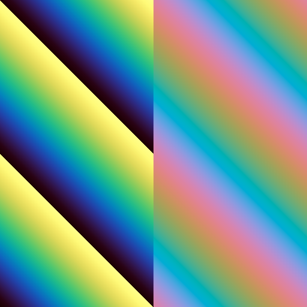
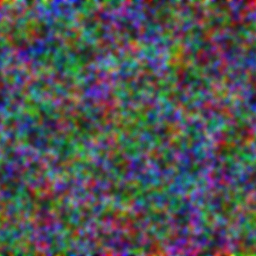
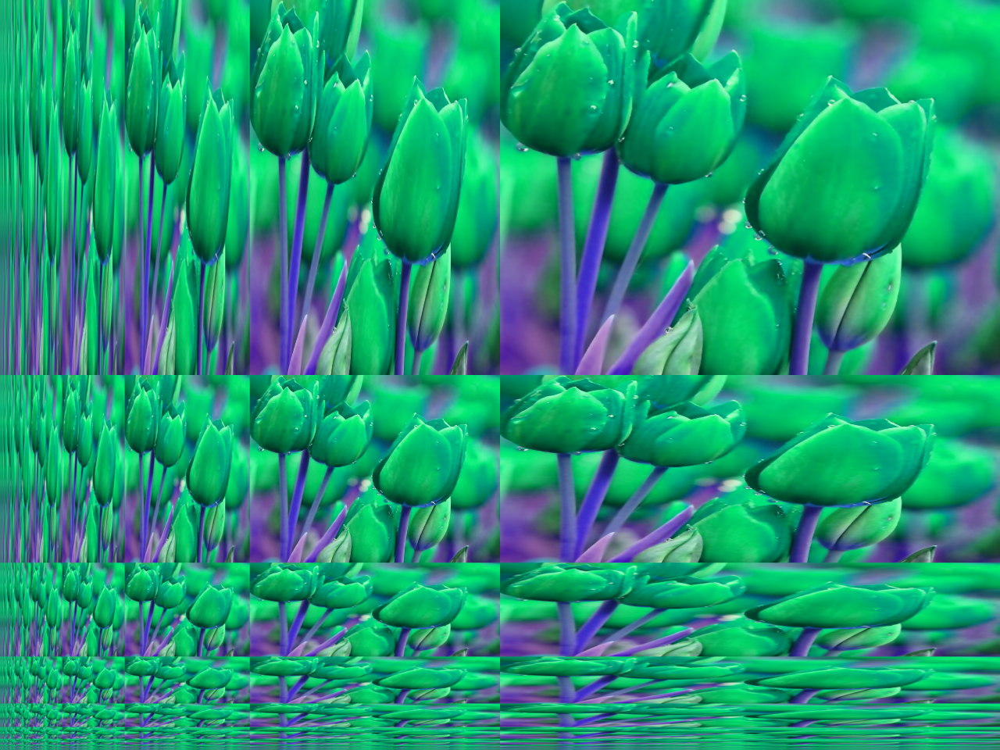
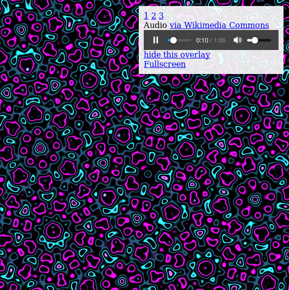

|
Example 1: "Hello GPU"
Set up an HTML Canvas for webGLM rendering, and render a simple coordinate-dependent image.
|
 |
Example 2: "1D texture"
Use a one-dimensional texture as a colormap.
Eventually, we will also render to texture to store rendering and simulation data between frames.
|
|  |
Example 3: "Use two textures"
Basic example loading two different colormaps as textures.
Using multiple textures is important for rendering more complex systems, which may require more state than a single
red-green-blue texture can store.
|
 |
Example 4: "Pixel blur"
Vertical blur by averaging nearyby pixel values. This example demonstrate basic recursive/iterated computation on
an image.
|
 |
Example 5: "Separable Gaussian blur"
We can compute larger Gaussian blurs quickly by blurring first horizontally and vertically.
|
 |
Example 6: "Multi-color blur"
For simulations, different colors might represent different quantities. This Gaussian blur kernel treats each
color channel separately, blurring them by different amounts.
|
 |
Example 7: "Noise"
Stochastic simulations and animations require a source of noise. This kernel approximates uniform pseudorandom number
generation, in a fast ad-hoc way that is suitable for visualizations (not not guaranteed to be random enough for other
uses).
|
|  |
Example 8: "Spatiotemporal noise"
This example combines driving noise with repeated Gaussian blurs to create a spatiotemporal noise effect.
|
 |
Example 11: "Bitops"
WebGL doesn't explicitly support unsigned integer types and bit operations. However, most reasonable hardware and WebGL implementations should implicitly store color texture data as 8-bit integers. This kernel accesses this color data as if it were uint8, even though it is technically a float.
|
 |
Example 25: "Gaussian noise"
Convert uniform random numbers to Gaussian random numbers with mean and variance specified by the mouse location.
|
|  |
Example 21: "Recursive mipmaps"
Mipmaps are successively downsampled copies of a texture that are used to avoid aliasing. The are usually computed once, with a program is initialized. However, if we are rendering to texture data, and then want to use that data as a texture to color 3D objected, we may want to updates mipmaps. Rather than update all texture resolutions at once, however, we successively downsample on each iteration. meaning that lower-resolution mipmaps are updated later.
|
 |
Example 25: "Statistical mipmaps"
Texture mipmaps compute the average texture color over a region, by downsampling. What if we'd like the average statistics, like mean and variance, over a given region?
|
 |
Example 25: "Hello particles"
Particle systems are useful in many-body simulations. This example uses texture data for particle location, and also renders each particle differently based on an offset into a texture.
|
 |
Example 13: "Julia set"
Track the mouse location and render a Julia set using video feedback.
|
 |
Example 9: "Quadratic feedback"
Quadratic video feedback example of iterated conformal maps which can be used to render Julia set fractals.
|
 |
Example 10: "Logarithmic feedback"
Iterated logarithmic video feedback. The logarithmic map can be used to approximate the coordinate mapping from visual cortex to retinal (or "subjective") coordinates, which explains why some visual hallucinations take on a tunnel appearance. (Ermentrout GB, Cowan JD. A mathematical theory of visual hallucination patterns. Biological cybernetics. 1979 Oct 1;34(3):137-50.)
|
 |
Example 18: "Psychedelic filter"
Applies a combination of blues, sharpening, and hue rotations for a psychedelic image effect.
|
 |
Example 14: "Complex arithmetic"
Interpret length-2 vectors as complex numbers using a collection of macros. More sophisticated video feedback example.
|
 |
Example 17: "Quasicrystal 1"
An infinitely-zooming quasicrystal visualization with Shepard tone accompaniment, black and white.
|
|  |
Example 17: "Quasicrystal 2"
An infinitely-zooming quasicrystal visualization with Shepard tone accompaniment, color.
|